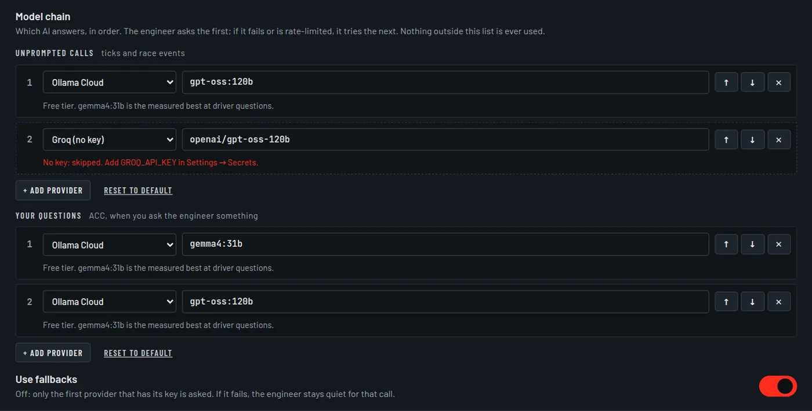

Choosing your AI
The app computes the analysis; the model you choose turns it into words. You bring the key, and you decide which providers are asked and in what order.
Recommended setup #
Ollama Cloud free tier, with gemma4:31b
One free key covers everything:
- Your questions (ACC) go to
gemma4:31bfirst. In the project's tests it answered 80 of 80 held-out driver questions, wheregpt-oss:120bmanaged 70 to 74, in about 1.5 to 3 seconds. - Unprompted calls use
gpt-oss:120bon the same key.
Paste the key into the Ollama Cloud card during setup and the app builds this chain for you. Get a key.
Get an Ollama Cloud key #
- Sign in or create an account at ollama.com.
- Open Settings → Keys on ollama.com and create an API key.
- Add it to airaceGP, in any one of these places:
- the Ollama Cloud card in the first-run wizard;
- Settings → Secrets, field
OLLAMA_API_KEY, then Save secrets; - the
.envfile in the app folder:.envOLLAMA_API_KEY=your-ollama-key
A key saved in Settings works from the next AI call, with no restart. The free tier has usage limits. When you reach one, the app reports AIR-202; a second provider in your chain keeps the engineer talking.
The model chain #
The model chain is the list of providers the engineer asks, in order. It lives in Settings → AI → Model chain. There are two lists:
| List | Used for | Time limit |
|---|---|---|
| Unprompted calls | Periodic check-ins and race events: everything the engineer says without being asked. Also your questions in F1 25. | 60 s |
| Your questions | What you ask the engineer in ACC. | 8 s |
- The engineer asks the first entry that has its key. An entry without a key is skipped and marked no key.
- Use fallbacks on: if a provider fails or is rate-limited, the next one is asked. Off: only the first provider with a key is asked, and if it fails the engineer stays quiet for that call.
- Up to six entries per list. ↑ and ↓ reorder, × removes, Reset to default goes back to the chain built from your keys.
- Nothing outside these lists is ever called.

When the questions list applies
It is used in ACC with the default engineer settings. If you move Call length away from 50, or turn off Say what's on the dash or Allow the engineer to stay quiet, the app switches to its full prompt and your questions use the unprompted list instead.
Until you save a chain, the default is: Ollama Cloud gpt-oss:120b for unprompted calls
when an Ollama key is set, and gemma4:31b on Ollama Cloud first for questions, followed by
the unprompted list.
All providers #
| Provider | Key in .env | Preset models | Notes |
|---|---|---|---|
| Ollama Cloud | OLLAMA_API_KEY | gpt-oss:120b, gemma4:31b, gpt-oss:20b | Free tier. Recommended. |
| Groq | GROQ_API_KEY | openai/gpt-oss-120b, openai/gpt-oss-20b | Very fast. The free tier allows 8k tokens a minute. The same key enables Groq transcription. |
| Google Gemini | GEMINI_API_KEY | gemini-2.5-flash, gemini-2.5-flash-lite | Free tier with a limited number of requests a day. |
| OpenRouter | OPENROUTER_API_KEY | openai/gpt-oss-120b:free | Free models are shared and often congested. |
| Anthropic | ANTHROPIC_API_KEY | claude-haiku-4-5-20251001 | Paid. |
| Custom (OpenAI-compatible) | CUSTOM_API_KEY | you name it | Any /chat/completions endpoint. Set the URL and model in Settings → AI → Custom API endpoint. |
| Ollama on this PC | none | qwen3:8b | No key and no internet. Shares the GPU with the game. |
Any model name can be typed into a chain entry; the presets are suggestions.
Other providers through Custom
The wizard's List more providers offers OpenAI, Together AI, Fireworks, DeepInfra,
Cerebras, xAI, Mistral, DeepSeek and others. They all use the one Custom slot: one
CUSTOM_API_KEY and one endpoint URL. Where the wizard knows a provider's URL it fills it
in; otherwise enter it in Settings → AI → Custom API endpoint. A missing URL,
model or key is AIR-209.
Ollama on your PC
Install Ollama from ollama.com, download a model, and add
Ollama on this PC to your chain with that model's name. The app talks to it at
localhost:11434.
ollama pull qwen3:8bA local model runs on the same GPU as the game, so frame rate and answer speed both depend on your hardware. Problems here are the AIR-25x codes.
Where keys live #
- Keys are stored in
.envin the app folder, on your PC. They are never written toweb_config.json. - Settings → Secrets edits that file. It shows only a masked preview of each key, and it works only on the PC running the app, never from a phone on your network.
- The race brief goes only to the providers in your model chain.
- Removing a key is reported as AIR-210; that provider is skipped until a key is added again.